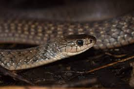

Keelback snakes are a group of non-venomous or mildly venomous snakes found in Asia and Australia, known for their distinctive keeled scales, which give them a rough texture. They are semi-aquatic and are commonly found near water bodies such as rivers, ponds, and marshes. Their diet primarily consists of amphibians, fish, and small reptiles, with some species, like the Australian keelback, having a unique resistance to the toxins of invasive cane toads. Certain keelback species, such as the red-necked keelback, possess mild venom and can store toxins from their prey, making them one of the few snakes that acquire defensive chemicals from their diet. Despite their sometimes intimidating appearance, keelbacks are generally harmless to humans and play an important role in controlling amphibian and fish populations in their ecosystems.
Keelback snakes are primarily found in wetland habitats such as rivers, ponds, swamps, and rice fields, where they thrive in moist environments with abundant prey like fish, amphibians, and small reptiles. They are mostly diurnal and are excellent swimmers, often seen gliding through the water in search of food. While generally non-aggressive, keelbacks can become defensive when threatened, flattening their bodies and striking if provoked. Some species, like the red-necked keelback, have a unique ability to store toxins from their prey, using them as a defense mechanism against predators. Despite their sometimes intimidating appearance, keelbacks are harmless to humans and play a crucial role in maintaining ecological balance.
